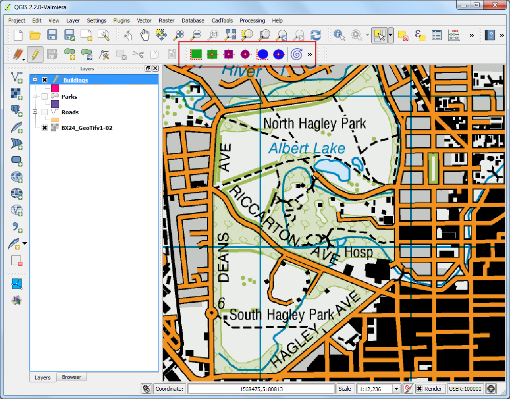
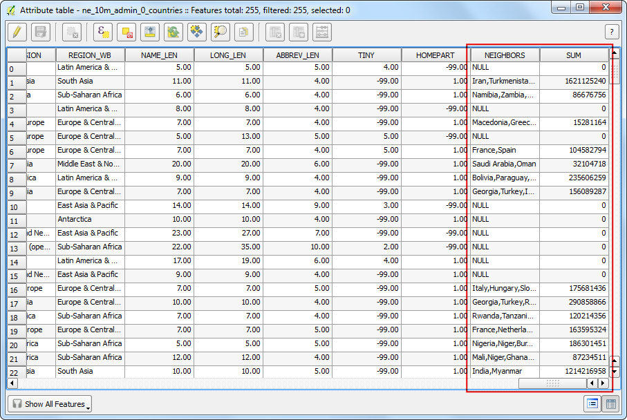
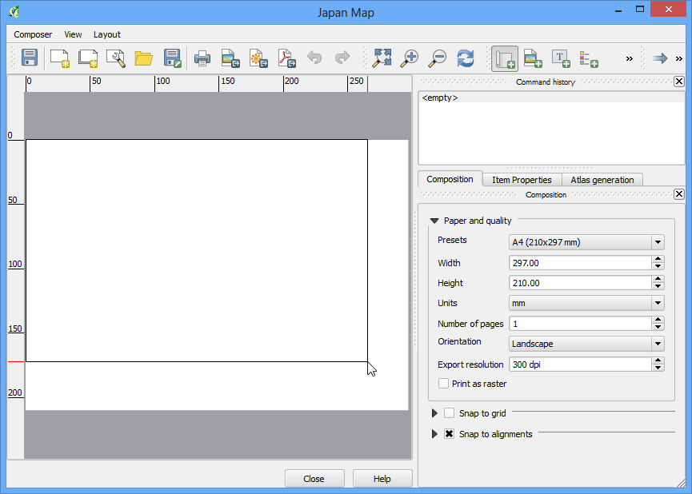
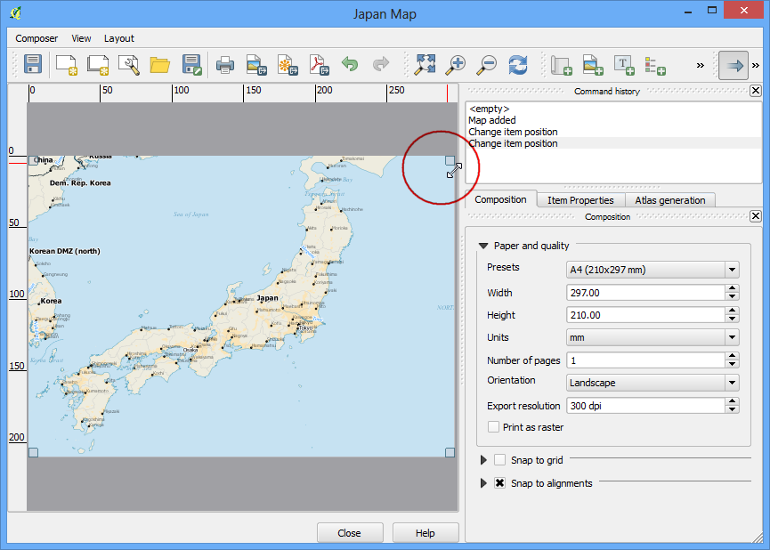
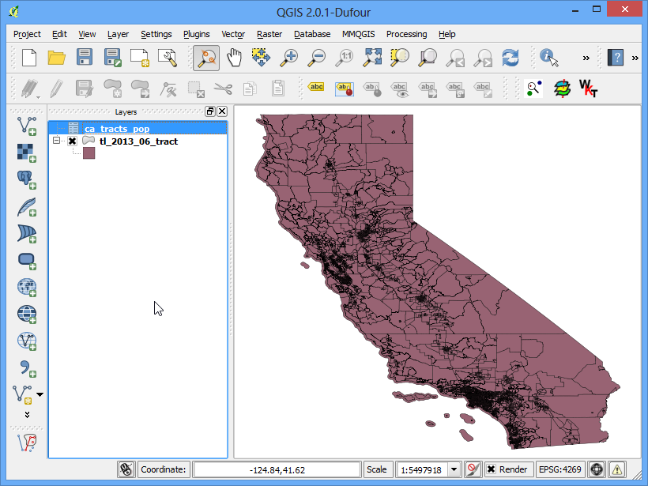
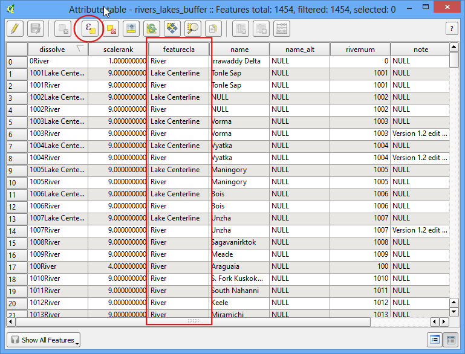

Performing Table Joins¶
Not every dataset you want to use comes as a shapefile, or in a spatial format. Often the data would come as a table or a spreadsheet and you would need to link it with your existing spatial data for use in your analysis. This operation is known as a Table Join and this tutorial will cover how to carry out table joins in QGIS.
Overview of the task¶
We will use a shapefile of census tracts for California and population data table from US Census Bureau to create a population map for california.
Other skills you will learn¶
- Creating .csvt files to indicate column data types in a CSV file.
- Loading CSV files that do not contain any geometry in QGIS.
Get the data¶
US Census Bureau has various spatial extracts from the MAF/TIGER database. You can query and download census tracts shapefile for California.
Americal FactFinder is a repository of all census data for the US. You can use Advanced Search and query for the Topic - Total Population and Geographies - All Census Tracts in California to create a custom CSV and download it.
Download Census Tracts for California
Procedure¶
- We will first load the census tracts shapefile. Go to Layer ‣ Add Vector Layer.

- Browse to the downloaded zip file tl_2013_06_tract.zip and select it. QGIS can open zip files directly so no need to uncompress it first.

- Select the tl_2013_06_tract.shp layer and click OK.

- You will the census tracts loaded into QGIS.

- Right-click on the layer and select Open Attribute Table.

- Examine the attributes of the tracts shapefile. To join a table with this shapefile, we need a unique and common attribute for each feature. In this case, the GEOID field is a unique identifier for each tract and can be used to link this shapefile with any other table containing the same ID.

- Open the CSV file ca_tracts_pop.csv in a text editor. You will notice that each row of the file contains information about a tract along with the unique identifier we saw in the previous step. Note that this field is called GEO.id2 in the CSV. You will also note that the D001 column has population value for each of the census tract.

- We could import this csv file without any further action and it would be imported. But, the default type of each column would be a String (text). That is ok except for the D001 field which contains numbers for the population. Having those imported as text would not allow us to run any mathematical operations on this column. To tell QGIS to import the field as a number, we need to create a sidecar file with a .csvt extension. This file will have only 1 row specifying data types for each column. Save this file as ca_tracts_pop.csvt in the same directory as the original .csv file. You can also download the csvt file from here.

- Now we are ready to import the CSV file to QGIS. Go to Layer ‣ Add Delimited Text Layer.

- Browse to the folder containing the CSV file and select it. Make sure you have selected File format as CSV (comma separated values). Since we are importing this as a table, we must specify that our file contains no geometry. Select the No geometry (attribute only table) option. Click OK.

- The CSV will now be imported as a table to QGIS.

- Select the tl_2013_06_tract layer. Right-click on it and select Properties.

- In the Layer Properties dialog, select the Joins tab. Click on the + button at the bottom to create a new table join.

- In the Add vector join dialog, select ca_tracts_pop as the Join layer. Next we have to select the field with unique ids in both the shapefile and the CSV. Select GEO.id2 and GEOID as the Join field and Target field respectively. Click OK.

- Close the Layer Properties dialog and return to the main QGIS window. At this point, the fields from the CSV file are joined with the shapefile. Right-click on the tl_2013_06_tract layer and select Open Attribute Table.

- You can now see a new set of fields, including ca_tracts_pop_D001 field added to each feature. Now you have access to the population value of each tract from the CSV file. Close the attribute table and return to the main QGIS window.

- Right-click the tl_2013_06_tract layer and select Properties.

- Select the Style tab. Select the Graduated from the drop-down menu. As we are looking to create a population map, we want to assign different color to each census tract feature based on the population count. Select ca_tracts_pop_D001 as the Column. Select a color ramp of your liking from the Color ramp drop-down. In the Mode, select Quantile (Equal Count). Next click Classify. You will see a different color assigned to certain population ranges. Click OK.

- You will now see a nice visualization of the census tracts as styled using population values. Use the Zoom in tool to select a smaller area from the layer.

- You have a detailed and accurate population map of California. You can use the same technique to create maps based on variety of census data.
